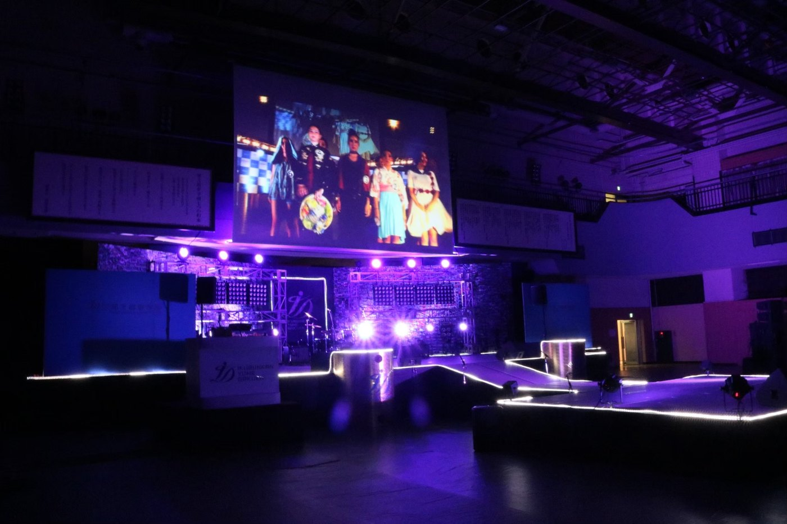
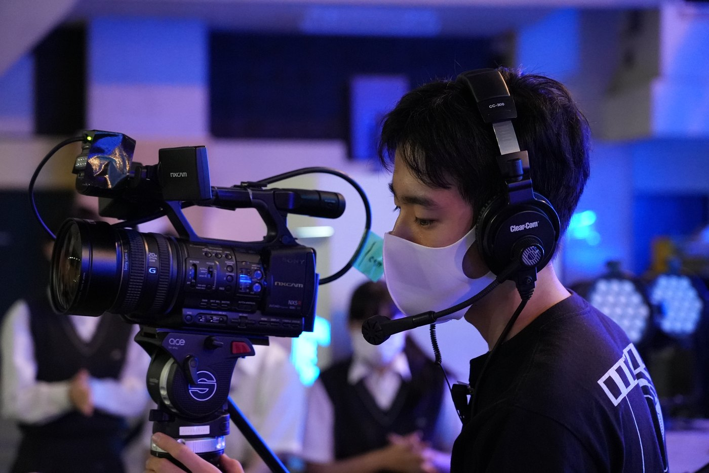
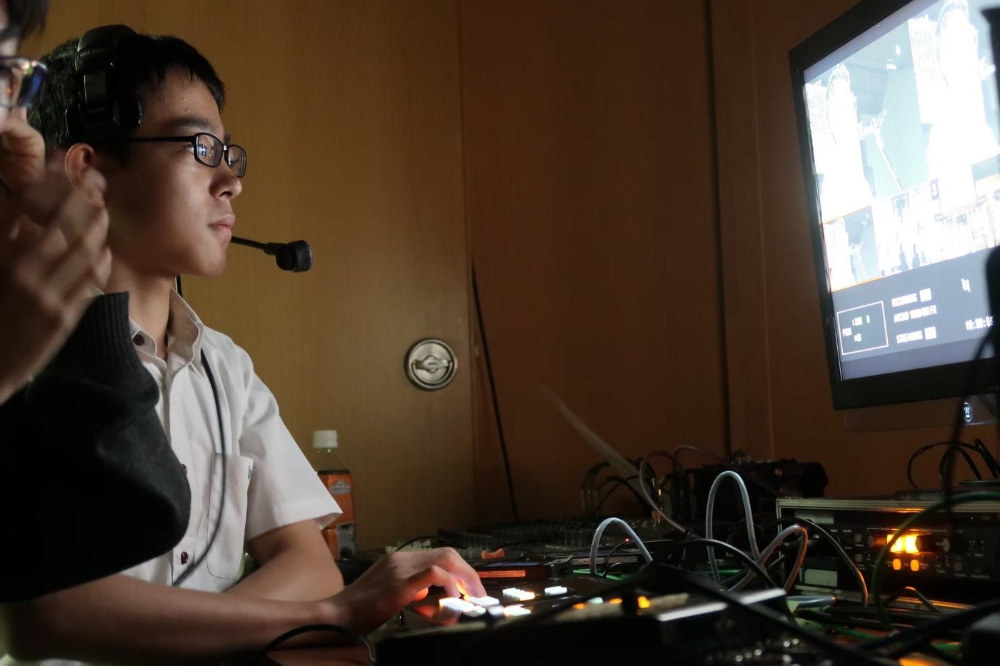

校内イベントの 撮影・配信・運営
IBSの活動は、VTR制作だけではありません。体育祭・文化祭・入学式・卒業式といった校内イベントでは、ステージの撮影・スイッチング・実況を行い、コロナ禍では配信も担っていました。私はカメラマンから始まり、MC、スイッチャーへと役割を広げるなかで、自分の担当だけでなく「コンテンツ全体を俯瞰する」視点を身につけました。
現場のしくみ
体育祭以外のイベントは、いつも地下体育館で行われます。業者が入ってステージが設営され、IBSはそのステージ上のスクリーンにカメラ映像を映し、後方の席の人にも状況を伝えながら収録します。イベント中のコーナー切り替えVTRも制作し、MCのキューワードに合わせて出力する。映像は基本的に、3台のカメラをスイッチングして作っていました。文化祭では、地下のステージと地上を結ぶ生中継も行いました。

カメラマンとして — 画を探す
私のスタートは、カメラマンでした。3人のカメラマンのうち、ほかの2人より自分のカメラが長く使われるように、常にいい画を探し回っていました。その積み重ねが、いまの自分の絵作りや構図のセンスを養ってくれたのだと思います。

MCとして — ステージを俯瞰する
カメラマン以外に、イベントのMCを務める機会にも恵まれました。中学2年から高校2年まで毎年、入学式に登場していたので、校内で一番顔を知られた生徒だったはずです。
MCとは、マスター・オブ・セレモニー。事前準備でそのイベントの目的と、それを達成するための段取りを把握し、本番ではステージ上の様子を見ながら進行を進めていく。リアルタイムでステージを俯瞰して、いま何をすべきかを判断する力が、ここで身につきました。
スイッチャーへ — 必要な画を切る
カメラの経験を積んでくると、今度はスイッチャーの仕事も担うようになりました。間にMCを経験していたおかげで、イベントの段取りや進行が自然と見えていて、どのタイミングでどの画が必要かが分かるようになっていました。それをカメラマンに指示し、必要な画を切る——それがスイッチャーの仕事です。
特に、有力な先輩たちがまとまって引退してしまった中学3年の「夢の日」では、スイッチャー未経験者がそのポジションに座らざるを得なくなりました。そこで私は、センター後方でカメラを構えながら、ステージ全体を俯瞰して、残り2人のカメラマンにもスイッチャーにも指示を出す——という離れ技で乗り切りました。

「なんでもやる」の原点
これらの経験から学んだのは、カメラはカメラだけに集中していてはいけない、ということです。コンテンツ全体を俯瞰してはじめて、より良いカメラワークが狙える。同じように、コンテンツ制作は、自分の担当以外のことにも目を配ってこそ成立する。これが、私の「なんでもやる」というスタンスの原点のひとつになっています。